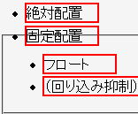
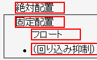

リストアイテム要素（display: list-item; を指定した要素）に対して絶対配置・固定配置・フロート化の指定をするとdisplayプロパティがblock値に変更され、リストマーカーが消えてしまう。
display: list-item;
全てのリストアイテムにはリストマーカーが表示されるはずです。
N7.02での表示（標準モード）
Opera7.11での表示（標準モード）
Opera6.06、Opera7.11標準モード、Opera7.11互換モードで不具合の発生が確認されました。